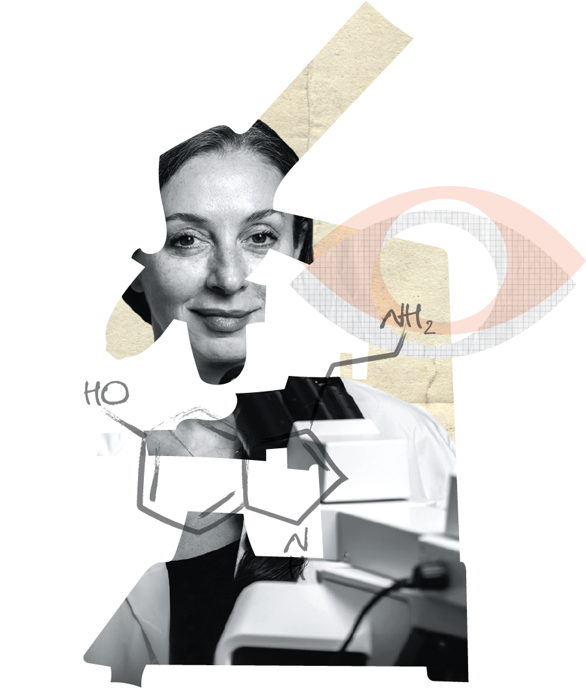

Rendre l’invisible visible.
Rapport annuel 2022–2023

Une science audacieuse
pour la santé cérébrale
Accélérer, intensifier et
financer la recherche
sur le cerveau partout
au Canada

Il importe de mener des recherches sur le cerveau si l’on veut comprendre, traiter et un jour prévenir les quelque 1 000 affections neurologiques existantes. En investissant dans la recherche sur le cerveau audacieuse, nous investissons aussi globalement dans notre santé et bien-être.
Données du 1er janvier 2022 au 31 mars 2023

nouveaux programmes lancés
millions de dollars investis dans la recherche

cliniciens et chercheurs ayant siégé à un comité d’évaluation par des pairs de la Fondation Brain Canada

subventions en cours

rencontres du comité d’évaluation par des pairs
subventions accordées

événements étudiants financés

concours lancés
chercheurs subventionnés

établissements hôtes
nouveaux programmes lancés
millions de dollars investis dans la recherche
cliniciens et chercheurs ayant siégé à un comité d’évaluation par des pairs de la Fondation Brain Canada
subventions en cours
rencontres du comité d’évaluation par des pairs
subventions accordées
événements étudiants financés
concours lancés
chercheurs subventionnés
établissements hôtes

«
La Fondation Brain Canada est au cœur de l’écosystème canadien de recherche sur le cerveau. Ensemble, nous réalisons des initiatives résolument visionnaires et transformatrices.
«
La Fondation Brain Canada joue un rôle crucial en encadrant les collaborations novatrices entre chercheurs, travailleurs de la santé et patients. Nous forgeons des plateformes transformatrices, au diapason des besoins évolutifs de la recherche moderne.

«
La Fondation Brain Canada transforme le paysage de la recherche sur le cerveau au pays en accélérant l’innovation et en mobilisant le milieu scientifique grâce à un financement conséquent et à des engagements interdisciplinaires envers la recherche sur le cerveau.
David S. Park
Président du comité de recherche et administrateur de la Fondation Brain Canada
Dans le domaine des neurosciences, la recherche à fort potentiel nécessite un accès partagé aux ressources, comme les équipements, laboratoires, services, bases de données, ordinateurs, serveurs, archives de patients et biobanques, ou plus simplement des « plateformes ».
Même si elles sont très complexes, sophistiquées et coûteuses, ces plateformes représentent un important facteur d’accroissement des capacités et un moyen rentable d’accéder à des équipements, technologies et services de pointe qui autrement ne seraient pas à la portée des chercheurs.
Les plateformes sont également un moteur d’innovation et de collaboration interdisciplinaire. En soi, elles sont nécessaires pour répondre aux besoins changeants de la recherche.
Les études de cas présentées cette année illustrent le rayonnement des subventions de plateformes, en décrivant la manière dont le milieu scientifique canadien et mondial en bénéficie pour aboutir à des découvertes. Les projets accomplis englobent des subventions accordées en 2014 et 2015 pour une durée d’environ quatre ans.

les fonds gouvernementaux, les fonds appariés et le soutien institutionnel.

le développement des compétences, le maillage et la participation des patients et de leur famille.

les découvertes qui approfondissent notre connaissance des rouages du cerveau et les moyens de prévenir, diagnostiquer, traiter et guérir les maladies.
Lorsqu’on se remplit la panse de gâteau au chocolat, le cerveau reçoit un signal de satiété qui enclenche dans l’organisme le processus de métabolisation. Heureusement, les sucres et les gras du gâteau ne se rendent pas jusqu’au cerveau pour lancer le signal, car la barrière hémato-encéphalique (BHE) leur bloque le chemin puisqu’ils pourraient endommager le système nerveux central. Le signal de satiété provient plutôt des tanycytes, des cellules cérébrales spécialisées qui traversent la BHE et servent de messager entre l’organisme et le cerveau.
Œuvrant à l’Université McGill, Masha Prager-Khoutorsky est une sommité des tanycytes qui étudie leur influence sur des maladies comme l’obésité, l’hypertension et le diabète. Grâce à la subvention Futurs leaders canadiens de la recherche sur le cerveau 2019 de la Fondation Azrieli, elle a découvert un élément capable de perturber la transmission des signaux de satiété des tanycytes : le rythme circadien.
« La subvention Futurs leaders a donné à mon laboratoire les moyens d’étudier cette nouvelle piste. Ce programme prestigieux a été d’une aide cruciale pour faire mes premières armes en recherche. Les cohortes de Futurs leaders incarnent véritablement l’avenir des neurosciences ! »
Masha Prager-Khoutorsky, Ph. D.
Pour illustrer le problème, Masha Prager-Khoutorsky cite l’exemple de tanycytes défectueux, incapables de détecter la leptine (l’hormone libérée dans le sang lorsqu’on mange), qui, faute d’émettre un signal, empêchent le cerveau de contrôler le métabolisme. Autrement dit, le cerveau ne reçoit aucun signal de satiété. Dans le cas de l’obésité, davantage de calories s’accumulent sous forme de graisse.
La modification du rythme circadien pourrait être l’une des causes de l’augmentation du taux d’obésité.
« Il est vrai que notre alimentation plus variée entre en jeu, mais notre rythme circadien a subi de profonds changements au cours de nombreuses années. Par exemple, notre exposition à la lumière est beaucoup plus longue, ce qui affecte le rythme circadien et, de ce fait, le métabolisme », explique-t-elle.
Grâce à des fonds supplémentaires de 1,5 M$ provenant du programme conjoint de recherche en santé Canada-Israël, Masha Prager-Khoutorsky a élargi le champ de ses travaux financés par la Fondation Brain Canada en explorant un autre facteur qui mine la communication des tanycytes entre l’organisme et le cerveau : la neuroinflammation provenant d’infections bactériennes. Ce nouveau projet s’appuie sur une collaboration existante avec Ruud Buijs, de l’Université nationale autonome du Mexique, et compte un nouveau collaborateur, Yoav Livneh, de l’Institut Weizmann des Sciences en Israël.
Une souche de probiotiques sera bientôt mise à l’épreuve comme traitement potentiel de la sclérose latérale amyotrophique (SLA). L’étude clinique voit le jour grâce à un investissement de 1,6 M$ de la Fondation familiale Weston, une manne qui s’ajoute à une série de bourses de découvertes accordées par la Société canadienne de la SLA et la Fondation Brain Canada.
« Cette étude a suscité beaucoup d’intérêt dans le monde entier et cela n’a rien d’étonnant, car la SLA est une maladie dévastatrice et incurable », explique Alex Parker, chercheur principal et neuroscientifique œuvrant au Centre de recherche du CHUM (CRCHUM) à Montréal. « On connaît bien les probiotiques. Ce ne sont pas des médicaments, donc le risque qu’ils produisent des effets secondaires est minime. »
L’équipe d’Alex Parker utilise des modèles animaux pour mieux cerner des maladies comme la SLA et ultimement les guérir. Sous la houlette de Audrey Labarre, une stagiaire devenue associée de recherche qui a récemment décroché un stage Accélération de Mitacs pour faire progresser ses travaux, les chercheurs ont découvert, à l’aide d’un modèle de vers de la SLA, que la bactérie lacticaseibacillus rhamnosus HA-114 protège les motoneurones, soit les cellules nerveuses du cerveau qui contrôlent le mouvement musculaire.
Grâce à une bourse de découverte 2021 de la Société canadienne de la SLA et de la Fondation Brain Canada, l’équipe d’Alex Parker a réussi à confirmer cet effet protecteur dans un modèle animal plus complexe, la souris.
« À l’époque, les autres subventionnaires ne savaient pas trop quoi penser de notre idée. »
Alex Parker, Ph. D.
Grâce à des analyses génétiques, comportementales et d’imagerie, l’équipe a découvert que les probiotiques corrigent la perturbation du métabolisme des lipides associée à la SLA – nommément le processus de bêta-oxydation qui transforme les lipides en énergie dans les cellules. Selon les chercheurs, le probiotique HA-114 remédie au problème en fournissant des lipides à la centrale énergétique de la cellule : la mitochondrie. L’augmentation de l’apport lipidique rééquilibre le métabolisme affecté par la SLA et ralentit la neurodégénérescence.
« La Société canadienne de la SLA et la Fondation Brain Canada ont financé les différents stades d’évolution des travaux. À l’époque, les autres subventionnaires ne savaient pas trop quoi penser de notre idée », explique Alex Parker.
L’essai clinique du probiotique HA-114 fera appel à 100 Canadiens. L’équipe prélèvera du sérum et du sang des participants avant et après le traitement aux probiotiques pour en examiner la lipidémie et le microbiome. La comparaison des sujets sains par rapport à ceux atteints de SLA permettra de mieux comprendre le profil lipidique des patients atteints de cette maladie. De plus, elle confirmera si l’effet réparateur observé dans les modèles de vers et de souris s’opère également chez l’humain.
L’équipe du Dr Eric Smith de l’Université de Calgary a découvert des marqueurs d’imagerie dans le sang et le cerveau permettant de distinguer la maladie d’Alzheimer d’une autre cause méconnue de déclin cognitif : l’angiopathie amyloïde cérébrale (AAC).
Ses travaux ont été accomplis grâce au financement de la Fondation Brain Canada, dans le cadre d’une subvention d’équipe Initiative de recherche multi-chercheurs (IRMC) 2015.
« C’est grâce aux fonds accordés par la Fondation Brain Canada que nous avons pu identifier des marqueurs sanguins et d’imagerie de l’angiopathie amyloïde cérébrale, une source de déclin cognitif jusqu’alors peu étudiée, déclare le Dr Smith. Ces travaux ont révélé des facteurs de démence moins courants, mais dont il faudra absolument tenir compte au chapitre des options de traitement individuelles. »
L’angiopathie amyloïde cérébrale (AAC) représente 7 % du risque de démence et 20 % des AVC hémorragiques. Cette maladie apparentée à l’alzheimer est méconnue du grand public et des omnipraticiens, car il est difficile de la distinguer d’autres sources de déclin cognitif.
« J’applaudis la Fondation Brain Canada, qui a su reconnaître l’importance d’élaborer des méthodes novatrices et complémentaires pour mieux comprendre le déclin cognitif, et ce, en levant les œillères pour voir au-delà de la maladie d’Alzheimer. »
Eric Smith, Ph. D.
Pour mieux cerner les similitudes et différences entre les deux maladies, le Dr Smith et ses collaborateurs ont entrepris d’identifier des marqueurs de l’AAC dans les biofluides et les neuroimageries.
Ils ont découvert un nouveau test capable de déceler la bêta-amyloïde dans le sang en analysant les globules blancs qui l’absorbent pendant leur transit dans le système sanguin.
Avec l’aide du Dr Peter Stys de l’Université de Calgary, l’équipe du Dr Smith a élaboré AmiraSpecMC, une technique hautement sensible qui sonde la présence d’agrégats de bêta-amyloïde absorbée par les globules blancs dans le sang. Les Drs Stys et Smith élargissent maintenant leurs travaux grâce à des fonds offerts par le Weston Brain Institute et une collaboration avec l’Université McGill. Les chercheurs ont breveté la technologie AmiraSpecMC et l’adaptent maintenant à un éventail d’autres maladies caractérisées par des protéines mal repliées, notamment la maladie de Parkinson et la sclérose en plaques.
Une autre découverte a révélé d’autres importants marqueurs de neuroimagerie dans le cerveau : la mesure des lésions à la substance blanche, une détérioration de la circulation sanguine dans des régions cérébrales lorsqu’elles en ont besoin, et un rétrécissement du cerveau. Une récente étude accomplie par le Dr Smith et ses collègues a démontré que ces marqueurs représentent 50 % de l’effet de l’AAC sur la cognition.
Catherine Lebel est une experte en neuroimagerie de l’Université de Calgary. Elle a publié les résultats d’une étude unique en son genre sur les jeunes vulnérables à une grave maladie mentale, dont la schizophrénie, le trouble bipolaire et la dépression. Cette étude s’inscrit dans une vaste Initiative de recherche multi-chercheurs (IRMC) dirigée par Jean Addington de l’Université de Calgary et financée par la Fondation Brain Canada et le Hotchkiss Brain Institute.
« Nous voulions savoir qui aurait besoin d’aide et s’il est possible de la leur offrir à un stade précoce », explique Catherine Lebel.
La première étape du projet consistait à classifier les jeunes à partir d’une évaluation clinique du risque de maladie mentale grave et des symptômes présents. Ils ont été répartis en cinq groupes : 1) les sujets sains sans antécédents personnels ou familiaux de trouble mental ; 2) les sujets sains présentant des facteurs de risques familiaux ; 3) les sujets ayant des symptômes légers ; 4) les sujets aux symptômes plus aigus, mais sans diagnostic formel ; et 5) ceux ayant reçu un diagnostic au cours de l’étude. Les chercheurs ont recueilli les données de neuroimagerie des cinq groupes au début de l’étude et un an plus tard pour déceler des signes trahissant l’apparition d’un trouble mental grave.
« En sachant qui progressera vers un grave trouble mental, nous pourrions intervenir rapidement et peut-être prévenir la maladie dans des circonstances idéales. »
Catherine Lebel, Ph. D.
À l’aide de ces données, l’équipe de Catherine Lebel a généré des « connectomes », soit des cartes illustrant la manière dont fonctionne le réseau cérébral. À partir des données de neuroimagerie, les connectomes cartographient la connectivité structurelle (le réseau de connexions de la substance blanche) et fonctionnelle (la manière dont les différentes régions cérébrales interagissent). Ensuite, l’équipe a utilisé un modèle d’apprentissage machine pour trouver des caractéristiques cérébrales propres à chacun des cinq groupes de jeunes.
« Nous avons examiné de nombreuses facettes, mais rien ne semble différencier notablement les jeunes atteints d’un grave trouble mental de ceux qui n’en souffrent pas tout en y étant vulnérables », explique Catherine Lebel. « Il n’y a peut-être rien à trouver, mais ce genre d’expérience demeure néanmoins très instructif. »
Cette approche pourrait servir de base à de futures études visant à prédire les maladies mentales graves. D’ordinaire, ce genre d’étude s’attarde à une seule maladie à la fois, alors que l’équipe de Catherine Lebel a choisi d’examiner l’ensemble des troubles mentaux. Ce choix reflète une conviction scientifique grandissante voulant que, à leur stade précoce, les troubles mentaux graves soient souvent impossibles à distinguer les uns des autres.
Catherine Lebel est lauréate d’une subvention du Programme de recherche en santé mentale Bell Cause pour la cause – Fondation Brain Canada. Elle dirige un projet visant à développer une application pour améliorer la santé mentale et les compétences parentales. En 2022, elle a également remporté le prestigieux Prix Steacie, qui souligne annuellement les travaux de recherche exceptionnels d’un jeune chercheur canadien.
Sébastien Jacquemont a remporté une subvention d’équipe dans le cadre de l’Initiative de recherche multi-chercheurs (IRMC) 2015. Ce généticien et chercheur souhaite comprendre pourquoi certains profils génétiques augmentent la prédisposition d’un enfant à l’autisme, à la schizophrénie ou autre désordre neuropsychiatrique. Ce savoir est essentiel à l’élaboration d’interventions précoces et de thérapies personnalisées.
Sébastien Jacquemont a constaté une lacune dans les mesures cognitives, comportementales et cérébrales des ensembles de données actuels : l’absence d’enfants porteurs de mutations associées à un risque élevé de trouble neurodéveloppemental, ce qu’il voyait souvent à sa clinique. Il souhaitait constituer une cohorte de familles présentant différentes mutations génétiques liées à ces troubles pour déterminer si différentes mutations touchant la même fonction biologique produiraient des symptômes neuropsychiatriques similaires.
Avec son équipe, il a jugé utile d’étudier l’ensemble des mutations simultanément, afin d’évaluer leur influence sur les caractéristiques cérébrales et comportementales. C’était une idée audacieuse il y a une décennie. « On a remis en question la logique de ma démarche et prédit son échec. On m’enjoignait d’étudier une mutation à la fois », se remémore-t-il.
Sébastien Jacquemont affirme que la plupart des organismes subventionnaires auraient refusé son projet. Or, la Fondation Brain Canada a compris l’utilité de sa démarche, tout comme la valeur de l’équipe qu’il avait constituée, notamment les Dre Mayada Elsabbagh, une sommité de l’autisme, la neuropsychologue Sarah Lippé et l’expert en neuroimagerie Alan Evans. Ensemble, ils ont recruté 400 familles dans l’étude financée par la Fondation Brain Canada et, quatre ans plus tard, ils ont réussi à établir de fortes corrélations entre certaines mutations génétiques et la connectivité fonctionnelle du cerveau.
« Avec bon nombre de ces chercheurs, nous avons élargi la portée de la subvention d’équipe en démarrant un vaste projet : Québec 1000 familles (Q1K). Il s’agit du plus grand protocole de recherche intégré dans les services cliniques au Québec et l’un des plus grands au monde », explique-t-il. Q1K bénéficie d’un financement de 10 M$ de la Fondation Marcelle et Jean Coutu.
« Grâce à l’investissement de la Fondation Brain Canada, nous avons abandonné l’idée préconçue qu’il faut étudier un gène à la fois. »
Sébastien Jacquemont, Ph. D.
Dernièrement, Sébastien Jacquemont a remporté une subvention de 2,5 M$ des National Institutes of Health (NIH) afin de poursuivre son étude avant-gardiste du bagage génétique d’après son influence sur les fonctions cérébrales et le comportement en ce qui a trait aux troubles neuropsychiatriques. « Nous n’aurions jamais réussi à décrocher la subvention des NIH sans les données préliminaires obtenues grâce à la subvention d’équipe de la Fondation Brain Canada. Notre hypothèse avait du mérite, mais elle n’aurait pas été financée sans elles », déclare-t-il.
Les données émanant du projet de Sébastien Jacquemont sont désormais partagées par le biais du consortium ENIGMA (Enhancing NeuroImaging Genetics through Meta-Analysis), un réseau mondial de plus de 2 500 scientifiques.
Les maladies cérébrovasculaires, notamment les microangiopathies, rendent très vulnérable à l’alzheimer et aux autres formes de démence. Dans le cerveau, elles abîment la substance blanche, provoquant un rétrécissement de certaines régions. Ce faisant, l’alzheimer peut mener à une microangiopathie en aggravant l’accumulation de protéines bêta-amyloïdes dans les vaisseaux sanguins du cerveau. Les dégâts infligés par ces deux maladies minent les fonctions cérébrales et accélèrent le déclin cognitif des personnes âgées.
Ainsi, il importe d’élucider les mécanismes biologiques en jeu afin d’identifier les soins adaptés aux personnes atteintes d’un désordre cérébrovasculaire qui prédispose à l’alzheimer.
C’est le défi auquel s’attaque Walter Swardfager, un chercheur de l’Université de Toronto et de l’Institut de recherche Sunnybrook, grâce au programme international de bourses de recherche (IRGP) qui s'inscrit dans les bourses de recherche de l’Alzheimer’s Association (AARG), un organisme avec lequel la Fondation Brain Canada cofinance le projet. Les fonds lui permettent d’identifier les variants génétiques qui accélèrent le rétrécissement du cerveau en présence de microangiopathie.
Au fil de ses explorations préliminaires, l’équipe de Walter Swardfager a découvert l’EPHX2, un variant associé aux dommages à la substance blanche. Plusieurs troubles neurodégénératifs présentent des polymorphismes mononucléotidiques, ou variants génétiques, du gène EPHX2, qui affectent le volume du rétrécissement cérébral en présence de microangiopathie. Cela suppose qu’en agissant sur l’enzyme produite par le gène EPHX2, on pourrait prévenir les dommages cérébraux et le déclin cognitif causés par une microangiopathie chez les personnes atteintes de la maladie d’Alzheimer ou qui y sont vulnérables.
« Nos subventions s’appuient désormais sur les réalisations accomplies et pourraient même déboucher sur des études cliniques. C’est extraordinaire. »
Walter Swardfager, Ph. D.
Après cette découverte, et grâce à un financement d’appoint de l’AARG, l’équipe a pu établir un parallèle entre la microangiopathie et une forte concentration sanguine de l’enzyme EPHX2. Walter Swardfager s’apprête maintenant à vérifier si le fait d’inhiber l’enzyme codée par le gène EPHX2 préviendrait les troubles cognitifs liés aux maladies neurodégénératives, afin de prévenir ou ralentir la progression de la démence.
« Ces nouvelles données ont accru la productivité de mon laboratoire et permis la formation de 18 étudiants de 1er et 2e cycles, déclare-t-il. Nos subventions s’appuient désormais sur les réalisations accomplies et pourraient même déboucher sur des études cliniques. C’est extraordinaire. »
Les fonds accordés en 2017 à Walter Swardfager alors qu’il en était à sa 2e année à titre de professeur adjoint au département de pharmacologie et de toxicologie de l’Université de Toronto ont contribué à l’essor de sa carrière universitaire et de son laboratoire.
« Les bourses comme celles de l’AARG qui appuient les chercheurs en début de carrière, ainsi que les fonds de démarrage comme ceux de la Fondation Brain Canada et de l’Alzheimer’s Association sont cruciaux. C’était ma première bourse internationale. Je ne saurais trop insister sur l’importance d’un tel financement et le monde de possibilités qu’il a créé pour moi et mes stagiaires », confie celui qui est maintenant titulaire d’une chaire de recherche du Canada.
«
La capacité de la Fondation Brain Canada à fédérer les ressources et à obtenir des fonds de contrepartie attire les donateurs individuels et les entreprises. Au Canada comme à l’étranger, l’essentiel est que les organisations partagent leurs connaissances et travaillent ensemble pour le bien commun. C’est ce que fait la Fondation Brain Canada.
Janis Levine
Présidente et cadre supérieure,
Fondation Henry et Berenice Kaufmann
Merci à nos donateurs. Dans un monde où l’invisible passe inaperçu, nous tenons à marquer une pause pour exprimer notre gratitude. Nous sommes profondément reconnaissants de la générosité témoignée par ceux qui ont fait un don cette année au profit de la recherche sur le cerveau.
Téléchargez le PDF pour consulter la Liste des donateurs.


«
En investissant davantage dans la recherche sur le cerveau, nous soutenons des percées qui changeront la donne et sauveront des vies.
Eric Pilon-Bignell
Fondateur de Project7
Eric a entrepris de gravir sept des plus hauts sommets du monde pour soutenir l’œuvre de la Fondation Brain Canada.
L’exercice financier de la Fondation Brain Canada, qui était du 1er janvier au 31 décembre, s’étend désormais du 1er avril au 31 mars, de sorte que le rapport annuel actuel couvre une période de 15 mois qui englobe deux exercices. Les états financiers reflètent donc ce calendrier de déclaration révisé.
Téléchargez le PDF pour consulter les états financiers détaillés.


programmes
de recherche
collectes
de fonds
administration
programmes
de recherche
collectes
de fonds
administration